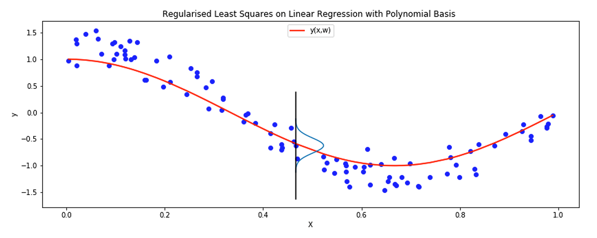

Learning from a probabilistic perspective (optional)
Learning outcomes:
After completing this optional lesson you should be able to:
- understand the optimisation process from a Bayesian framework
- use the maximum likelihood method to optimise the loss function
- motivate the regularised least squares using posterior maximisation
In this section we will discuss the link between minimising a loss function and probability theory, to see how learning can take a probabilistic perspective.
We will also establish links with a particular probabilistic framework, namely the Bayesian framework for learning. This lesson and its subsections provide additional information to support future modules, but it is not necessary to understand in detail in order to progress with this module. As such, you may wish to skim read the material now, and return to it in more detail later on.
Minimising least squares loss via maximising the likelihood
In conventional probability, we assume that the data has a specific distribution like Gaussian or Beta etc. and we use this assumption to calculate the probability of an event. But what if we want to do the other way round? What if we want to evaluate our assumption? What if we want to evaluate the likelihood that the given data has actually the assumed distribution? We will bootstrap and use the same concepts of probability to come up with a measure that quantify this concept. We call this quantity the likelihood.
What is likelihood?
So, in likelihood we apply the concept of probability into model parameters (hyper parameters and adjustable parameters-weights). In likelihood we vary the hyper parameters of the model (mainly the mean and the variance) and we try to calculate the likelihood that the data comes from the model i.e. the probability that the model under consideration is the correct model given the data. So, we vary the distribution (using its mean and variance) and we measure, using the likelihood estimate, how likely it is that the data has actually come from the distribution. If we consider a continuum of values for the model the likelihood defines a function over these values. The likelihood function for a distribution parameter (mean or variance) might be itself distributed according to some known distribution. An example would be the central limit theorem itself which states that the mean of a data samples of a variable tends to a normal (Gaussian) distribution regardless of the actual distribution of the variable which might be completely different. Let us try this ourselves here.
Likelihood: \(L(\) model \(\mid\) data \()\) read as: the likelihood of model given the data
Probability: \(P(\) data \(\quad \mid\) model \()\) read as: the probability of data given the model
Nevertheless, we calculate the likelihood via probability.
Maximising the likelihood with identical mean and variance
For example, given a univariate Gaussian distribution \(\mathcal{N}\left(x \mid \mu, \sigma^{2}\right)\) and a set of data points \(\mathbf{X}=\left\{\mathbf{x}_{1}, \mathbf{x}_{2}, \ldots, \mathbf{x}_{\mathrm{N}}\right\}\) of size \(N\), the likelihood of this Gaussian model generating all the data is the probability that all the given data has come from this distribution (distributed according to the Gaussian). Since the probability of a set of independent events taking place together equals to the multiplication of their individual probabilities and given that the dataset \(\mathbf{X}\) is independent and identically distributed (i.i.d) - identically distributed means all of the data is drawn from the same distribution whether we know the distribution or we try to estimate it. Then, the likelihood of the model given the data is given as the probability \(p\left(\mathbf{X} \mid \mu, \sigma^{2}\right)\) and is calculated as:
Note that the variables here are \(\mu, \sigma^{2}\) since we already have the data points. Our mission would be then to come up with a model that maximise the above likelihood function.
Maximising the likelihood with different means and identical variance
In the previous section on linear regression as a parametric model, we showed that \(y(\mathbf{x}, \mathbf{w})=E_{t}(t \mid \mathbf{x})\) and we have stated that this will be our main probability that we will try to estimate in order to minimise the expected loss is \(p(t \mid \mathbf{x})\).
Often we are given a data set pairs \(\left(\mathbf{x}_{n}, t_{n}\right)\) each value \(t_n\) is assumed to have a standard univariate Gaussian noise attached to it (t is a variable not a vector hence we are dealing with a univariate Gaussian)
Where \(ϵ\) is a zeros mean Gaussian random variable \(\mathcal{N}\left(\epsilon \mid 0, \beta^{-1}\right)\) and \(\beta=\frac{1}{\sigma^{2}}\). Therefore, the probability of a label \(t\) is given as:
Which states that the mean for \(t\) is \(y(\mathbf{x}, \mathbf{w})\) and the variance is \(\beta^{-1}\). This assumption is illustrated in figure 4.28:

Given that we have a dataset \(\mathbf{X}=\left\{\mathbf{x}_{1}, \mathbf{x}_{2}, \ldots, \mathbf{x}_{\mathrm{N}}\right\}\) and corresponding \(\boldsymbol{t}=\left\{t_{1}, t_{1}, \ldots, t_{N}\right\}\) of size \(\mathrm{N}\), the likelihood of the above Gaussian model \(\mathcal{N}\left(t \mid y(\mathbf{x}, \boldsymbol{w}), \beta^{-1}\right)\) generating all the \(t_n\) is the probability that all the given data has come from this distribution \(\mathcal{N}\left(t \mid y(\mathbf{x}, \boldsymbol{w}), \beta^{-1}\right)\). We make the assumption that \(t_n\) is independent and identically distributed (i.i.d). Then, the likelihood of the model given the data is given as the probability \(p\left(\mathbf{t} \mid \mu, \sigma^{2}\right)\) and is calculated as:
Least squares via likelihood maximisation (ML)
Since in supervised learning settings we will not seek to model the distribution of the input variables, and we have already eliminated the need for this distribution in the previously aforementioned section we will omit the input variables \(X\) to simplify our notation but it should be noted that it is implicitly assumed. And further noting that we have a linear model \(y\left(\mathbf{x}_{\mathbf{n}}, \mathbf{w}\right)=\mathbf{w}^{\top} \boldsymbol{\phi}\left(\mathbf{x}_{n}\right)\).
Recall that
and given that the logarithm is a monotonic function in the input, which means if we maximise \(\log \left(g_{1} g_{2} \ldots g_{N}\right)\) we would have maximised the product \(g_{1} g_{2} \ldots g_{N}\). We will seek to maximise \(\log (p(\boldsymbol{t} \mid \boldsymbol{w}, \beta))\) to maximise \(p(\boldsymbol{t} \mid \mathbf{w}, \beta)\), therefore:
Given that the Gaussian \(\mathcal{N}\left(t_{n} \mid y\left(\boldsymbol{x}_{n}, \mathbf{w}\right), \beta^{-1}\right)=\frac{1}{\sqrt{2 \pi}} \beta e^{-\frac{1}{2} \beta\left(t-\mathbf{w}^{\mathrm{T}} \boldsymbol{\phi}\left(\mathbf{x}_{n}\right)\right)^{2}}\)
Where \(J(w)\) is the sum of squared error that we have seen in earlier section on linear regression as a parametric model and where \(\mathbf{w}=\left(w_{0}, w_{1}, w_{2}, \ldots, w_{M-1}\right)\) and \(\boldsymbol{\phi}=\left(\phi_{0}, \phi_{1}, \phi_{2}, \ldots, \phi_{M-1}\right)^{\top}\) and \(\phi_{0}=1\).
Now to maximise the likelihood we take the derivative for the \(\log (p(\boldsymbol{t} \mid \boldsymbol{X}, \boldsymbol{w}, \beta))\) with respect to \(w\). Note that the first two terms \(\frac{N}{2} \log (\beta)-\frac{N}{2} \log (2 \pi)\) are not related to \(w\) and their derivatives with respect to \(w\) are 0. Hence:
So now we realise that minimising the sum of squared errors \(J(w)\) is equivalent to maximising the likelihood function. Now we set the derivative to 0 to obtain the \(w^*\) that minimise the loss function: \(\beta \sum_{n=1}^{N}\left(t_{n}-\mathbf{w}^{\top} \boldsymbol{\phi}\left(\mathbf{x}_{n}\right)\right) \boldsymbol{\phi}^{\top}\left(\mathbf{x}_{n}\right)=0\) noting that \(\beta\) cannot be 0 because it is the inverse of the variance.
Therefore, the final solution that optimise likelihood is identical to the least squares for linear regression with basis and is given as:
Similarly, we can minimise (26) with respect to \(β\) to obtain optimal value \(\hat{\beta}\) ̂that maximise the likelihood function.
Least squares with regularisation via posterior maximisation (MAP)
In this section we show how to infer a linear model learning with regularisation. Regularising the weights helps suppress the weights from changing or growing too much. This often helps prevent the problem of overfitting.
First, let us see how we can deal with the linear model learning as a full Bayesian learning problem. The assumption is that we will be given a data point \(x\) and a dataset \(X\) and labels \(t\). So far we have used a set of weights to estimate the output. We want to come up with an estimation that is valid for distribution over the weights and we want to marginalise the weights to eliminate their effect on the final output. In particular, we want to estimate \(p(t \mid x, \mathbf{X}, \mathbf{t})\) which is not conditional on the weights \(w\).
Previously, we showed how to come up with \(\mathbf{w}\) that maximise the likelihood. Now, we want to calculate the probability \(p(t \mid x, \mathbf{X}, \mathbf{t})\) to account for a full Bayesian treatment for a linear model. Note that from previous treatment we already assume that \(p(t \mid \mathbf{x}, \mathbf{w}, \beta)=\mathcal{N}\left(t \mid \mathbf{w}^{* \top} \boldsymbol{\phi}\left(\mathbf{x}_{n}\right), \beta^{-1}\right)\) (note that this is different than but related to the likelihood \(p(\mathbf{t} \mid \mathbf{X}, \mathbf{w}, \beta)\) that we maximised in the previous section) therefore, according to Bayes theorem:
Where \(∝\) means proportional to, ∝ will turn into equality once we normalise \(p(\mathbf{t} \mid \mathbf{X}, \mathbf{w}, \beta) p(\mathbf{w} \mid \alpha)\).
The first term is \(p(\mathbf{t} \mid \mathbf{X}, \mathbf{w}, \beta)\) is the likelihood function for our model and has been already showed to be Gaussian where we have shown how to come up with \(\mathbf{w}^{*}\) that minimises this likelihood and we showed that it is a Gaussian.
The second term is \(p(\mathbf{w} \mid \alpha)\) and is called the prior of the weights. It represents the prior assumptions about the weights that we can incorporate in our Bayesian treatment. We will assume that \(p(\mathbf{w} \mid \alpha)\) is an isotropic Gaussian (which is the simplest form of a multivariate Gaussian). Therefore the posterior distribution \(p(\boldsymbol{w} \mid \mathbf{X}, \mathbf{t}, \beta)\) is also Gaussian. In particular we will assume that the prior of the weights has a 0 means vector and has \(\alpha^{-1}\) variance i.e.
We can then maximise \(p(\mathbf{w} \mid \mathbf{X}, \mathbf{t}, \beta)\) by finding the most probable value w for it given the data. This is called posterior maximisation.
By taking the derivative for the negative logarithm and noting that ‖w‖2=w⊤ w we have:
We take the log and drop \(X,β\) to simplify the notation:
Hence, maximising the posterior distribution with respect w corresponds to minimising the regularised sum of squared error. By taking the derivative with respect to w and setting it to 0 we have the regularised least square algorithm as: \(\lambda=\frac{\alpha}{\beta}\)
If the matrix \(\left(\mathbf{\Phi}^{\top} \mathbf{\Phi}+\lambda \mathbf{I}\right)\) is invertible then the solution exists.